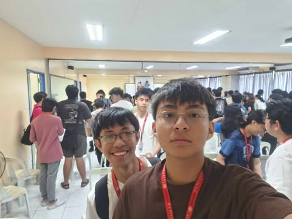
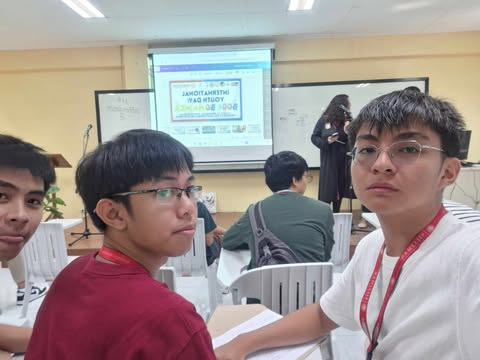
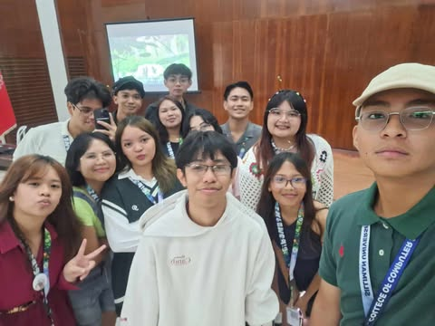
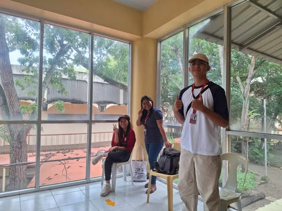
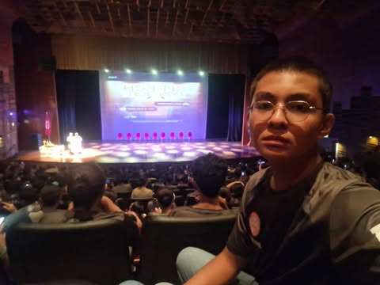

Balik Talent Lecture “Designing Intuitive User Experience”
Aug 20, 2024 | 8:30 AM By: Confederates Student Council (1 point)
Balik Talent Lecture entitled “Designing Intuitive User Experience: Key UI/UX Strategies” a lecture by Sheen Glaiza Balatero and Trisha Dominyk. This event was on August 20, 2024 at 8:30 AM at the ATA hall. This event was aimed to teach students effective strategies on UI and UX. This was used to create effective and convenient to users. The participants were mostly 1st year students and some 2nd year students.
I learned a few techniques to make websites or software more eye-catching and aesthetically pleasing. I also learned applications to use for website UI/UX which was Figma. I got what I expected to be very useful for building websites and software which to this day I still apply. It surprised me that a lot of thought actually goes through designing applications. I soon realized that the success of a website was linked to how good the design was and we were taught by the speakers how to create stunning designs used for grabbing people's attention. I liked this experience as it really taught us very useful strategies which I still use today.
The event significantly affected my worldview as I gained a deeper and more thorough understanding and appreciation for the design process behind User experiences. I learned that a lot happens in creating a design but it is mostly understanding the user’s needs and satisfaction. I could apply this learning in the near future when building websites or applications. I benefited from this event because I learned a lot of strategies and techniques for building Ui/Ux designs from the amazing speakers. If given the chance to experience this again, I would absorb more strategies to update my knowledge about Ui/Ux.
Because of this activity, I am more knowledgeable about the user’s needs and satisfaction for building designs for websites and software. I am more equipped with strategies and techniques to supply the needs of the user.

Book Bingo
Aug 21, 2024 | 9:30 AM By: Confederates Student Council (1 point)
The Book Bingo event was held on August 21, 2024 at 9:30AM at the ATA hall. It was a fun event that was filled with games. One of the games was guessing what character of a book one of the speakers were cosplaying. I enjoyed participating in the games even though I never won a prize.
I learned the value of cheering for others. It made me appreciate the joy of others during the games. I expected the event to be more about reading books which I was not fond of reading. But to my surprise my expectations were broken because not only have I learned more about book characters but I also had fun. I changed my view on the situation that cheering for other people and they eventually succeed was one of the most satisfying and joyful experiences. I liked the event even though I was not a book reader type but the speakers and host made it enjoyable and fun. The values reflected in the event that cheering for others' success never hurt or brought down your chances of being successful, so be cheerful and respectful.
This affected my worldview because it made me realize the joy of cheering for others. I would use this positivity to bring up others and motivate them. I would still continue to support others and wait for my turn to succeed and never bring anyone down. The benefits of this event was that I was able to learn a valuable lesson and I had fun together with my friends.
Because of this activity, I will continue to cheer other people’s success until the day mine comes. No person has ever failed because they brought someone up.

SUSG Infomedia Grand Orientation
Oct 12, 2024 | 1:00 PM By: Silliman University Student Government Infomedia Committee (3 points)
The SUSG Infomedia Grand Orientation, Was my first time being a speaker at an event where people actually made time to attend. This event was hosted on October 12, 2024 on a sunny afternoon at 1:00PM, located in the Multipurpose hall. Together with my infomedia friends and partners we discussed the roles and purposes for each division. Being the Logistics Vice-Head I was assigned to talk about the in and outs of our duties as part of the logistics committee.
I somewhat conquered my fear of public speaking when I am close to the friends who support me. I expected to go completely silent on the stage but due to sheer will I conquered my fear and the event went smoothly during my part. I was surprised that I managed to actually pull it off since this was also still my first time. I was also assigned to manage the games after the event. It was very fun and I managed to get to know more and more people. I loved the experience during that event. I hope another event will be organized by the Infomedia Committee. The only thing I deeply regret was not building more connections to my fellow infomedia members. Through hardship and perseverance I pulled something very difficult for myself before the event. I was proud.
Something that I realised is that it might seem scary at first but when you go ahead and try it, It is less scary than it used to be. Yes it was very scary but not improving and staying the same was more scary for me. That is why I join, organize, speak at events way beyond my comfort zone hoping to learn from the experiences i’ve been to. That is why to this day I still continue to do my part as a SUSG infomedia logistics head and I will continue this position until the end of the school year. I myself could say that I learned a lot from the activity. If another activity like this would happen, I would definitely join and prepare myself better to fully release my full potential.
Because of this activity, I am a person who is not scared to be out of my comfort zone. A person who invests in himself to become a better person overall. Someone who is not afraid of change.

CCS Freshmen Orientation
Sept 18, 2024 | 8:30 AM By: Confederates Student Council (2 points)
The CCS Freshmen Orientation was an event held at the ATA Hall on September 18, 2024 at 8:30AM. This event was an orientation about the in and outs of the department. This was to inform the students about the rules and policies of the university and the college. The people who attended the event were the students, professors, and the dean. I worked as one of the attendance committee members during this event.
I learned the in and outs of the college and gained an overview of the rules and policies. I got what I expected to be informed and I got to know a little more about the professors in my department. I was surprised by the new rules and grading systems because they were vastly different from the rules and grading system of Senior High School. The professors made a strong positive impact because they were approachable and gave practical advice. I liked that I got to know more about the professors. The hardest part of the event was learning to adjust to the new grading system. The value of responsibility and diligence was reflected to have a successful academic journey.
This event reinforced the importance of adaptability and resilience. I learned to adjust to the new system of college and not to get carried away and might break the rules. I would still continue to be guided and follow the rules of the college. This information is beneficial to me because it gave me an overview and I was guided about the rules and regulations of the college.
Because of this activity, I was guided and informed about the rules and regulations and also the guidelines of the college. This event also made me appreciate the faculty and college more due to their dedication to their craft.

Inter-Company Speech Contest “The ROTC Cadets: A Catalyst for Bagong Pilipinas.”
Oct 12, 2024 | 9:00 AM By: Silliman University Reserve Officer Training Corps. (1 point)
The inter-Company Speech Contest was a required event for our NSTP subject: ROTC or Reserve Officer Training Corps. It was held at the Claire Isabel McGill Luce Auditorium at 9:00 AM just right after our ROTC training that started at 6:00AM. The theme of this speech contest was “The ROTC Cadets: A Catalyst for Bagong Pilipinas.”. The ROTC cadet sponsors, our officers, and some intermission number was also shown at this event. We listened to the speech and also cheered for our company representative who was a contestant at this contest.
I actually expected this event to be a boring event because most of the people were only there because it was required. But at the end of this event, my expectations were changed because this event was inspiring, entertaining, and I have learned something about the importance of the NSTP ROTC component. I was surprised that even the officers who were mostly strict during training actually had a performance. The crowd was cheering for them because most of us were surprised. The speech that changed my worldview about the topic was the contestant for delta, which also won the contest. She proved that the sacrifices that we had to endure was just a fraction of the suffering other Filipinos had to experience everyday. She also stated that the ROTC component is not a preparation of war, but a preparation to help other Filipinos in times of crisis. This made a positive view about the ROTC component.
This affected my world view by showing to us that the NSTP ROTC component is not all about military preparedness and discipline but a preparation to serve the fellow Filipinos. This gave me a deeper purpose to serve others and heightened respect for the people who made sacrifices for the Filipino people. This taught me selflessness and a drive to serve others. I can apply these learning to serve the community any chance that I get. I will continue to participate in my rotc training in the future to also teach me discipline and readiness to serve the community. The benefits of this event is that it fosters a sense of community toward my peers and pride for the Filipino people.
Because of this activity, I am more aware of the importance of service, discipline, and community, and I feel inspired to contribute more meaningfully to my role in the ROTC component.